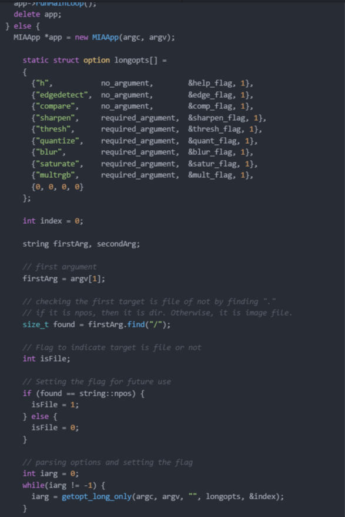
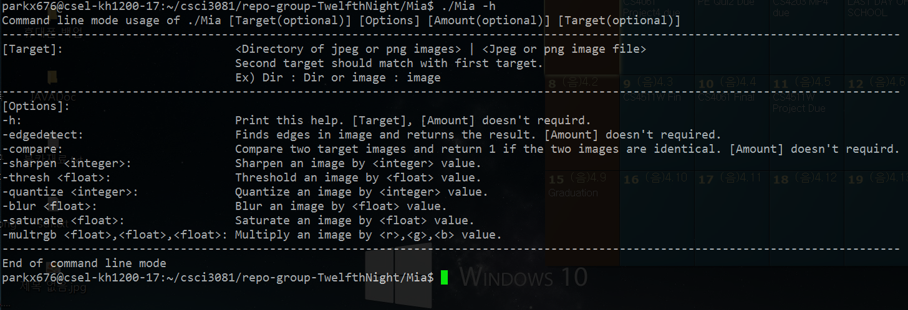

Iteration 3
The part of iteration 3 that I wrote that I tried to put effort on was the Mia. Mia can be used to apply every filter FlashPhoto previously supports to single image file or stack of image files, and also, it has command line mode without opening GUI. Since Mia is used for medical image analysis, it will usually deal with a stack of CT image files. Thus, both modes will be very useful to analyze and handle medical images effectively.
 This snippet is the main code for Mia, which is for the parsing the command line arguments. I decided to use getopt functions which automate some of the chore involved in parsing typical Unix command line options. With this function, I was able to parse options passed by a user and set the appropriate flag to decide which function should Mia use to handle target image(s). Since we are only using long option names for each filter, I used getopt_long_only to handle every filter options appropriately.
This snippet is the main code for Mia, which is help messages if user types -h option to see how to use command line mode of Mia. If you see the code, it uses help_flag to see if the flag is set by the getopt_long_only function which used to parse command line arguments passed by a user. Once user typed -h option, the getopt_long_only function will parse the arguments and set help_flag as 1. After parsing and setting the flag done, it will pass each flag's functionality of Mia and do appropriate actions. In this case, every help messages will be printed on the bash shell to address how to use Mia's command line mode.

This screenshot is the result of running command line mode with -h flag on the bash shell.
